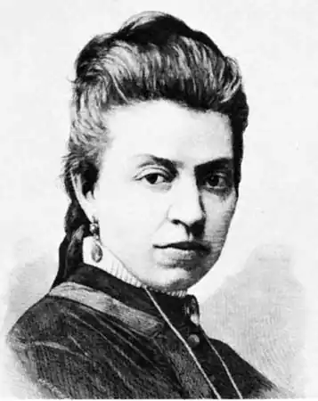
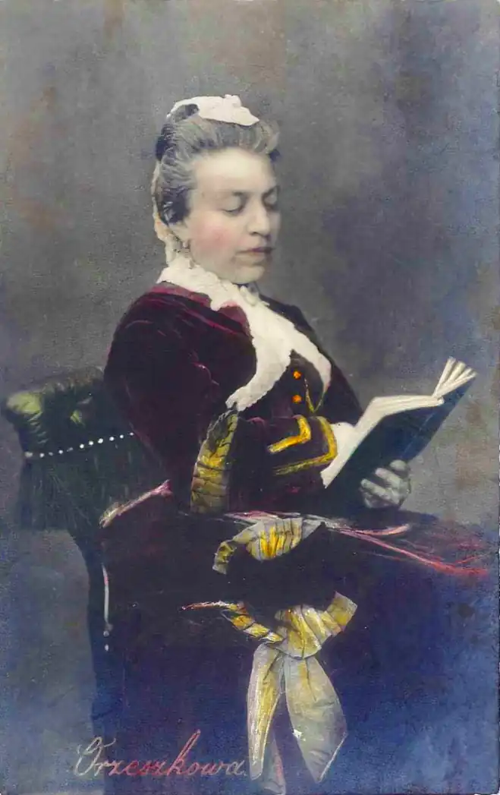

Ожешко Еліза (Orzeszkowa, Eliza — 06.06.1841. с. Мілковщизна Гродненської губ. — 18.05.1910, м. Гродно) — польська письменниця.Після А. Міцкевича Ожешко була другим польським письменником, котрі принесли польській літературі світову славу. Творча спадщина письменниці величезна і становить 60 художніх творів, у тому числі 30 великих романів, не беручи до уваги значного масиву публіцистичних і літературно-критичних статей.
Ожешко народилася у с. Мілковщизна поблизу міста Гродно. Походила вона із заможної шляхетської родини. її батько, Бенедикт Павловський, був людиною передових поглядів, брав активну участь у національно-визвольному русі. Він помер, коли Елізі виповнилося три роки, і далі її долею опікувалися мама і вітчим. Дівчинку виховували спочатку вдома, а з 1852 р. віддали у пансіон урсулінок (монастирський орден) у Варшаві. У 1857 р. Еліза закінчила пансіон, а наступного року вона вийшла заміж за місцевого поміщика Петра Ожешко і перебралася у його маєток — с. Людвинів Гродненської губернії. Після поразки повстання 1863 р. багато друзів і знайомих Ожешко були ув'язнені, а Петро Ожешко та його брат Флорентин — заслані у Сибір. Маєток було конфісковано. Еліза переїхала до батька у Мілковщизну і, незважаючи на важкий душевний стан, зайнялася там самоосвітою, почала писати. У 1869 p., після продажу їхнього маєтку з аукціону, вона переїхала у Гродно, де прожила до кінця життя і де активно зайнялася суспільно-громадською та літературно-художньою роботою.
Першим опублікованим твором Ожешко стало оповідання "Малюнок з голодних літ" ("Obrazek z lat glodowych", 1866), у якому письменниця змалювала білоруське село 1854—1856 pp., напередодні аграрної реформи. Твір побудований на контрастах та протиставленні двох світів — бідних і багатих, панського маєтку і селян, образи яких ще значною мірою ідеалізовані та схематичні. Із 2-ї пол. 60-х pp. Ожешко звернулася до жанру роману. У перших романах Ожешко виразно позначився вплив позитивізму та його ідей про тенденційну літературу. її поглядам у 60-х pp. була властива майже безмежна віра в науку. Наука, на думку Ожешко, — це та сфера діяльності, що допоможе людям здолати усі труднощі та побудувати щасливе суспільство, а література повинна ілюструвати передову суспільну ідею і тим виховувати суспільство, повчати його. Тому у перших романах Ожешко герої різко поділяються на позитивних і негативних. Позитивні герої найчастіше у відверто прямій і схематичній формі стверджують суспільний ідеал людини. Ожешко багато повчає і моралізує, але не типізує і не узагальнює. У романах Ожешко 60—80-х pp. можна виділити кілька головних проблем, які вона розробляє і до яких неодноразово повертається. Насамперед, це доля жінки в буржуазно-шляхетському середовищі. Ця тема порушується у цілій низці її романів: "Пан Граба" ("Pan Graba"), "Пізнє кохання" ("Ostatnia milosc"), "Щоденник Вацлави" ("Pamietnik Waclawy"), "Марта" ("Marta") та ін. Друга тема — це життя "низів" суспільства — тобто білоруського і польського селянства, якому присвячений "селянський" цикл романів та повістей Ожешко — "Низини", "Дзюрдзі", "Хам", "Над Німаном". Ще одна важлива для творчості О. тема — це єврейське питання, яке вона ставить в романах "Елі Маковер" ("Eli Makower"), "Меїр Езофович" ("Meir Ezofowicz"), "Сильний Самсон". Крім того, у багатьох творах Ожешко звертається до проблем польської інтелігенції, її національного буття, аналізує розклад і занепад аристократії та шляхти в нових суспільних умовах. До соціального роману Ожешко приходить не відразу. У її перших творах на передній план висуваються питання виховання нової людини, культ знання, праці, суспільної корисності. Основу фабули майже усіх цих творів складає історія кохання, за якою соціальний фон майже непомітний, а центральним образом виступає прогресивний суспільний тип, людина праці — інженер, директор фабрики, лікар, учений-хімік і т. д. Цей ряд творів започаткував роман "Пізнє кохання" (1867). Рисами подібної тенденційності, схематичності і спрощеності позначені й інші романи Ожешко кінця 60—70-х pp.: "З життя реаліста" ("Z zycia realisty", 1868), "У провінції" ("Naprowincji", 1870), "Добродії" (1871), "На дні сумління" ("Na dnie sumienia", 1873). Проте вже з кінця 60-х pp. Ожешко починає еволюціонувати від побутового роману до роману соціального. Своєрідним проміжним етапом цієї еволюції став у її творчості роман "У клітці" ("W klatce", 1870). Уже сама назва твору метафорично пов'язується насамперед із соціальними умовами життя суспільства. Поворотним пунктом у напрямку руху до соціальної проблематики став роман Ожешко "Пан Граба" (2,G9—1870). Вона й сама пізніше означувала "Пана Грабу" як "перший роман автора із широким соціальним задумом", як широку картину звичаїв провінційної шляхти. Роман цікавий також тим, що на прикладі трагічної долі дружини Граби — Камілли — Ожешко ввела у творчість жіночу тему. Орієнтація на соціальну проблематику характеризує і наступний роман Ожешко "Щоденник Вацлави" (1871). Це великий тритомний твір, в основі якого історія молодої дівчини, пізнання нею життя і пошуки свого місця у суспільстві. Найзначнішим досягненням Ожешко у жанрі соціального роману 70-х pp. стали її романи "Марта" (1875), "Елі Маковер" (1874), "Родина Брох-вичів" ("Rodzina Brochwiczow", 1876), "Пани Помпалінські" ("Pompalinscy", 1876), "Меїр Езофович" (1878). Основна тема роману "Марта" — це доля жінки в сучасному їй суспільстві, причому жінки-неаристократки, жінки праці, а не "ляльки" з аристократичного салону. Головна героїня — Марта Свицька — зіткнулася із надзвичайно гострою, як на той час, проблемою — проблемою жіночої праці. Питання роботи стоїть для неї особливо гостро, оскільки воно стосується виживання її та маленької доньки, яка залишилась у неї на руках після смерті чоловіка. У романі акцентується увага на соціальній нерівності жінок і чоловіків, на тому, як складно знайти роботу жінці у тогочасному суспільстві, якого неймовірного рівня сягає експлуатація жіночої праці. У центрі роману "Меїр Езофович" — євреї містечка Шибова і, зокрема, боротьба двох відомих у Шибові родин — рабинів Тодросів, котрі виступають втіленням фанатизму і віронетерпимості, і купців Езофовичів, котрі усвідомлюють необхідність освіти темного єврейського люду. 80-ті pp. XIX ст. умовно виділяють як другий етап творчості Ожешко. Він насамперед характеризується подальшою розробкою жанру соціального роману. На початку 80-х pp. вийшов друком цикл романів О. під загальною назвою "Примари" ("Widma"), куди увійшли "Примари" (1880), "Сільвек із кладовища" ("Sylwek Cmentarnik", 1880), "Зигмунт Лавич та його товариші" ("Zygmunt Lawicz і jego koledzy", 1882), "Мильні банки" ("Bankamydlana", 1882), "Первісні" ("Pierwotni", 1884). У цих творах Ожешко намагалася відгукнутися на нові віяння, пов'язані з першими проявами робітничого руху і поширенням соціалістичних ідей. Упродовж 1883—1888 pp. Ожешко створила "селянський" цикл творів, який вважається вершиною її творчості. До цього циклу входять повісті "Низини" ("Niziny", 1885), "Дзюрдзі" ("Dziurd-ziowie", 1885), "Хам" ("Cham", 1888). Найвизначнішим твором циклу є роман "Над Німаном" ("Nad Niemnem", 1887—1888), що став своєрідним відгуком О. на кризу позитивістських ідей, які, починаючи з 80-х pp. XIX ст., почали стрімко втрачати свій авторитет у польській суспільній думці, поступаючись місцем національно-патріотичним ідеям. Реагуючи на ці нові суспільні настрої та тенденції, Ожешко у романі "Над Німаном" рішуче відмовилася від примиренницької політичної позиції позитивістів і стала на бік тієї ідеології, яка намагалася утвердити в суспільній свідомості національно-патріотичні переконання та ідеї визвольної боротьби. Новою силою нації, на яку покладає надії Ожешко, виступає у романі покоління поляків, представлене вихідцями з середніх і нижчих прошарків польського суспільства (це, зокрема, Вітольд Корчинський, Юстина Ожельська та Ян Богатирович) . Вони керуються у своїй діяльності, по-перше, ідеєю про виправданість і необхідність продовження тієї національно-визвольної патріотичної боротьби, яку розпочали з російським царизмом попередники, "допозитивістські" покоління поляків, по-друге, ідеєю національно-класової консолідації усіх прогресивних сил польського суспільства. Цим патріотичним силам Ожешко протиставляє тих поляків, котрі з різних причин гальмують рух прогресивних сил суспільства. У романі це, з одного боку, представники демократичного (середнього) прошарку шляхти, які до певної міри розчарувалися в ідеалах національно-визвольної боротьби (цей "пласт" шляхти уособлює Бенедикт Корчинський), з іншого боку, це космополітична аристократична верхівка польської шляхти, яка далека від національних ідей і ніколи їх не поділяла (аристократи-землевласники Дажецький Ружиць і Зигмунт Корчинський). 1890—900-ті pp. складають третій і останній етап творчості Ожешко. Цей період загалом характеризується ослабленням соціальної проблематики : досить відчутним зниженням художнього рівня творів Ожешко. У тогочасних збірках оповідань ("Humки", 1890; "Меланхоліки" ("Melancholicy"), 1896 "Іскри", 1898; "Момент", 1901) вона ідеалізує дрібну шляхту, а також закликає до єднання польське суспільство. Життя шляхти складає основний предмет зображення і романів Ожешко цього періоду. Одна із головних проблем, до яких у той час зверталася письменниця, — це проблема альтруїзму, моральної і матеріальної самопожертви. Дехто з її героїв, наприклад, відмовляється від багатства та кар'єри і йде в народ знаходячи втіху у праці ("Два полюси", 1893 "Австралієць", 1902 і "Анастасія", 1902). В останніх творах Ожешко посилюється національно-патріотична проблематика: повість "І пісня нехай заплаче" — "І piesn niech zaplacze", 1905. збірка оповідань "Слава переможеним" ("Gloria victis", 1910). Ще з 1869 р. Ожешко оселилася у Гродно, де активно займалася літературою та громадською роботою. Поставивши собі за мету "пробудити духовне та суспільне життя" поляків білорусько-литовського краю, вона з допомогою друзів і знайомих у 1873 р. організувала у Вільно видавництво польських книжок. Упродовж 90-900-х pp. Ожешко майже безвиїзно жила у Гродно, звідки лише кілька разів виїжджала за кордон для лікування. У Гродно вона й померла.